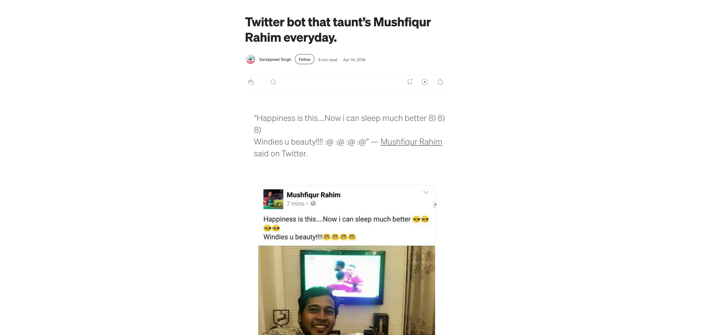

Building Your First Offline - Agent with Gemma 3
Who am i ?

Sarabpreet
The Tech Brains Behind
Former
- Webmaster @ Manipal Academy of Higher Education
- IT Lead @ Osam
- LocalSay
- Usho
Initiatives i back
- Jharkhand Open Coffee Club
- Code for Jharkhand
- Ranchi Cycling Club
- Google Developers Group
Heads Up
This presentation uses GIFs and short video clips, meme refferences for illustrative and educational purposes only, primarily to demonstrate the concepts of agent action, local inference, and speed.Why am i here?
For the love of bots
Bots & me.
Build a bot that taunts 🥸
Basically a (botpaglu).
the Problem
the Problem
- Latency: Constant round-trip time.
- Cost: Per-token billing can become expensive.
- Privacy/Security: Data leaves the local environment.
- Reliability: A dropped internet connection means a dead bot.
the souluchan?
Go Offline
Go Offline
AI that is Private, Cost-Free, Low-Latency, and Always-On.
Moving from Cloud-Centric to Device-Centric AI. This enables true edge computing for generative AI.
Introducing Gemma 3: The Edge Powerhouse
What is Gemma 3?
Google's latest family of open-weight, state-of-the-art models.
The "Why" for Offline: Gemma 3 is specifically designed for deployment on local devices.
Parameter Sizes: Available in multiple sizes (e.g., 270M, 1B, 4B, 12B) to suit different hardware (from mobile devices to laptops/single-GPUs).
The Power of Compact Models
It’s like having a very fast, dedicated personal assistant with perfect memory, not a general-purpose, cloud-connected super-genius.
Thus, Problem Solved.
The Key Components
What is a bot?
A bot is a program designed to perform a specific task, usually via a simple conversational interface (e.g., a chatbot answering FAQs). Limitation: Bots are typically reactive—they wait for a command and execute it.
Reactive & State-less: User Input → LLM Call → Response (One-off conversation).
What is an agent?
Proactive & Goal-Oriented: Goal → Reasoning/Planning → Tool Use → Action (Multi-step process, often with memory).
The Local Stack: Ollama
A powerful, user-friendly framework to download, run, and manage local LLMs. It simplifies downloading and running quantized Gemma 3 models (e.g., ollama pull gemma3:4b).
Let's run Ollama!!
https://ollama.com/download/windowsLet's Build
ollama pull gemma3:4b → ollama run gemma3:4b System Prompt
The core instruction that gives the bot its personality, tone, and knowledge constraints. This is what turns a generic LLM into a specific character/expert.
Example?
The Custom Agent Modelfile
Ollama uses a Modelfile to package the model and the custom system prompt. This creates a new, specific bot you can run. This is the key step in personalization.
Full Snippet
# 1. Base Model: Choose a Gemma 3 variant that suits your hardware.
# 'gemma3:4b' is a great balance of size and capability.
# Use 'gemma3:1b' if you have less RAM/VRAM.
FROM gemma3:4b
# 2. System Prompt: The soul of your bot. This defines its character, role, and constraints.
SYSTEM """
You are 'Mr. Singh' a witty and slightly 'casual' AI practicioner. You must answer questions only about bots, AI, and memes. You always use a polite and encouraging tone and sign off with a cheerful salutation.
"""
# 3. Parameters: Adjust the model's behavior for better character output.
# A lower temperature (0.3-0.5) makes the output more focused and consistent with the SYSTEM prompt.
PARAMETER temperature 0.4
# This parameter helps prevent the model from going on too long and maintains a conversational feel.
PARAMETER num_predict 256
# 4. Template (Advanced): Gemma models often use a specific chat template.
# This ensures the SYSTEM and USER prompts are formatted correctly for the model.
# The official Gemma template from Ollama handles multi-turn conversation automatically.
# By using the base model's default template, we ensure optimal performance.
# However, for demonstration, here is the structure that Ollama will use to combine the parts:
# TEMPLATE """
# {{- range .Messages -}}
# {{ .Content }}
# {{- end -}}
# """
Deploy 🚀
Run the newly created character model. The entire process—the model, the personality, the inference—is now running 100% locally and offline via the Ollama API or CLI.
ollama create mr-singh -f Modelfile
What we covered?
We successfully moved a powerful, state-of-the-art model (Gemma 3) out of the cloud and into a local, private environment using Ollama, transforming it into a personalized Agent-Bot.
What's Next?
AI Agent in Action
Visit Made In RanchiHow it works?
- scrap and clean (mix of logic and code)
- once done, convert it into your language eg. English
- format & post
Further Ideas
- Personal Productivity: A private, uncensored journaling or mind-mapping assistant.
- Field Operations: Maintenance manuals and troubleshooting in remote areas.
- Education: Personalized, offline tutoring or study-guide generation.
- Gaming/NPCs: Complex, dynamic character dialogue.
Questions?

Let's connect
- vist me at sarabpreet.dev
- @saarabpreet
Hidden Slides
This slide is visible in the source, but hidden when the presentation is viewed. You can show all hidden slides by setting the `showHiddenSlides` config option to `true`.
Lightbox
Turn any element into a lightbox using data‑preview‑image & data‑preview‑video.
<img src="image.png" data-preview-image="image.png">
<img src="video.png" data-preview-video="video.mp4">

Add the r-fit-text class to auto-size text
FIT TEXT
Fragments
Hit the next arrow...
... to step through ...
... a fragmented slide.
Fragment Styles
There's different types of fragments, like:
grow
shrink
fade-out
fade-right, up, down, left
fade-in-then-out
fade-in-then-semi-out
Highlight red blue green
Transition Styles
You can select from different transitions, like:
None -
Fade -
Slide -
Convex -
Concave -
Zoom
Themes
reveal.js comes with a few themes built in:
Black (default)
-
White
-
League
-
Sky
-
Beige
-
Simple
Serif
-
Blood
-
Night
-
Moon
-
Solarized
Slide Backgrounds
Set data-background="#dddddd" on a slide to change
the background color. All CSS color formats are supported.
Gradient Backgrounds
<section data-background-gradient=
"linear-gradient(to bottom, #ddd, #191919)">Image Backgrounds
<section data-background="image.png">Tiled Backgrounds
<section data-background="image.png" data-background-repeat="repeat" data-background-size="100px">Video Backgrounds
<section data-background-video="video.mp4,video.webm">